STUDIO
Nathalie
A study in texture and stillness — woven headpiece, brass jewellery, and high-key studio light against a soft grey ground.

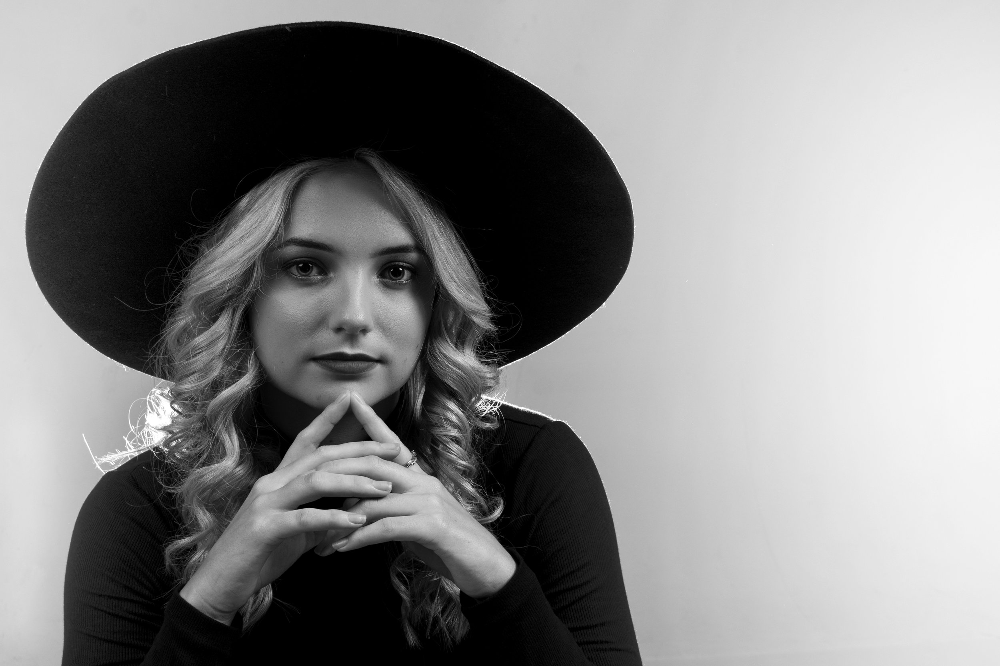
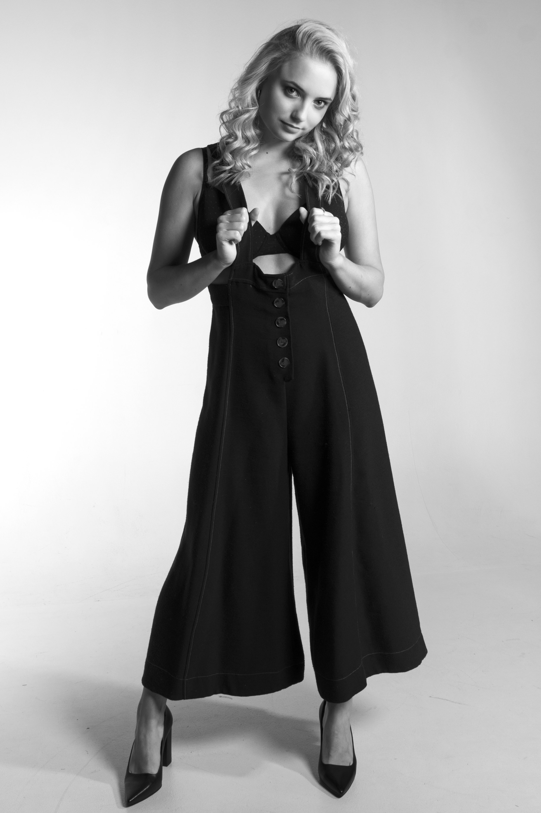
Kate
Black-and-white sports series — directional light shaping form and motion. Shot on a single backdrop, no retouching beyond contrast and grain.
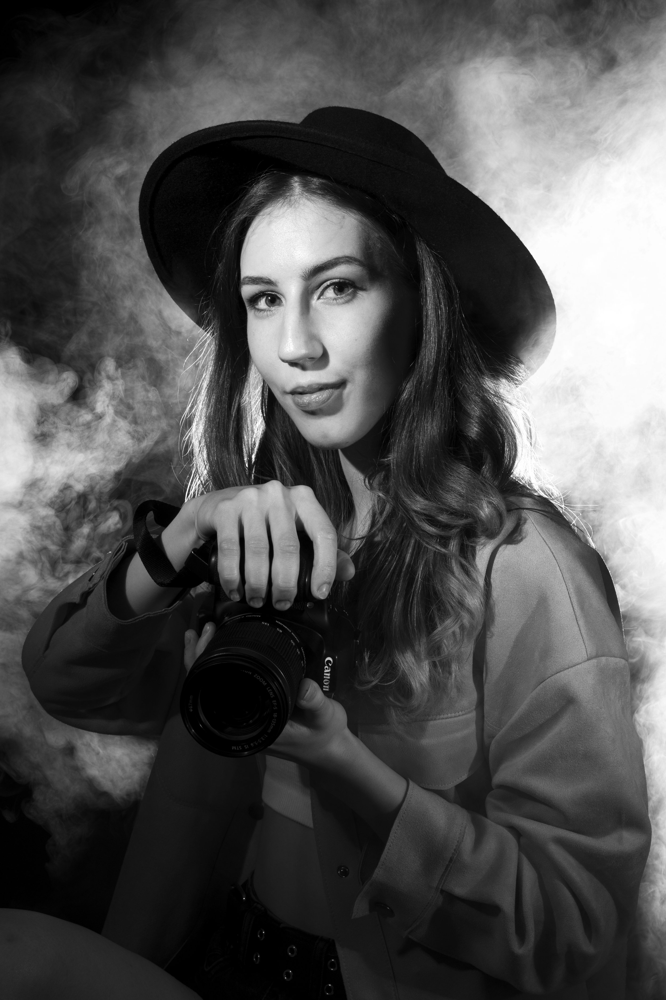
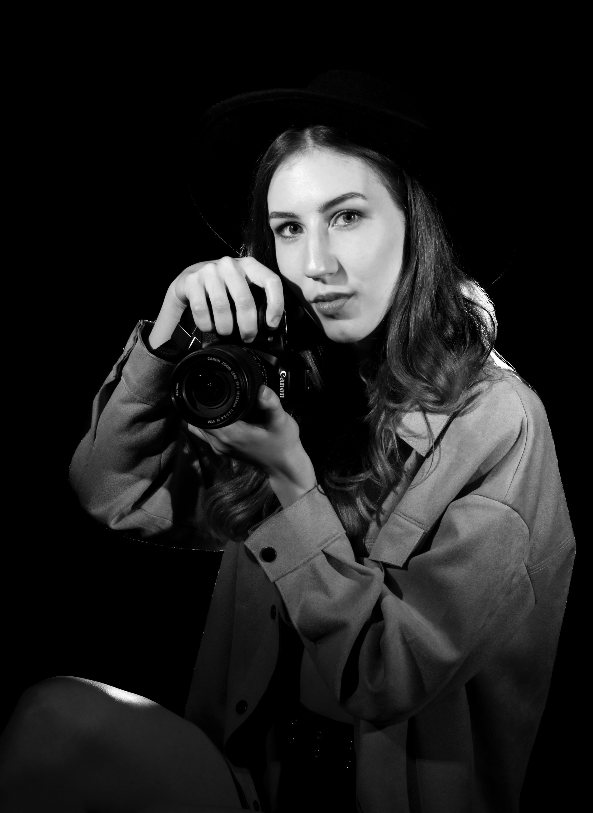
Karl
Strength sequence — kettlebell, stance, breath. The set was lit with a single key and a feathered fill to keep edges sharp without losing midtones.
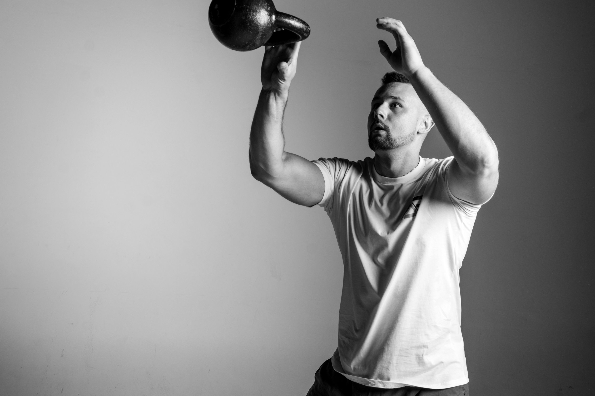
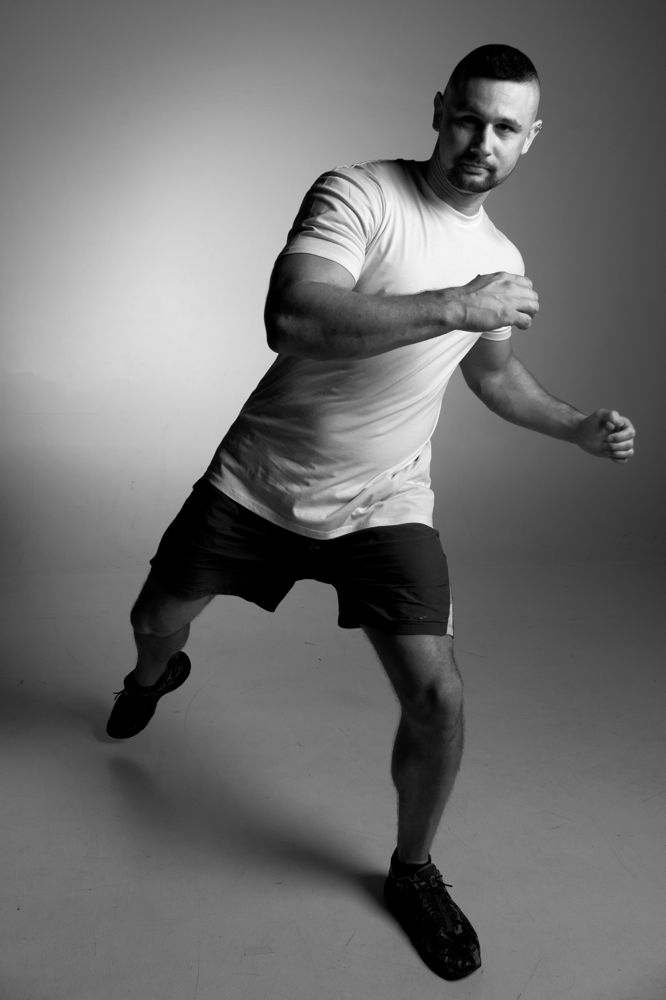
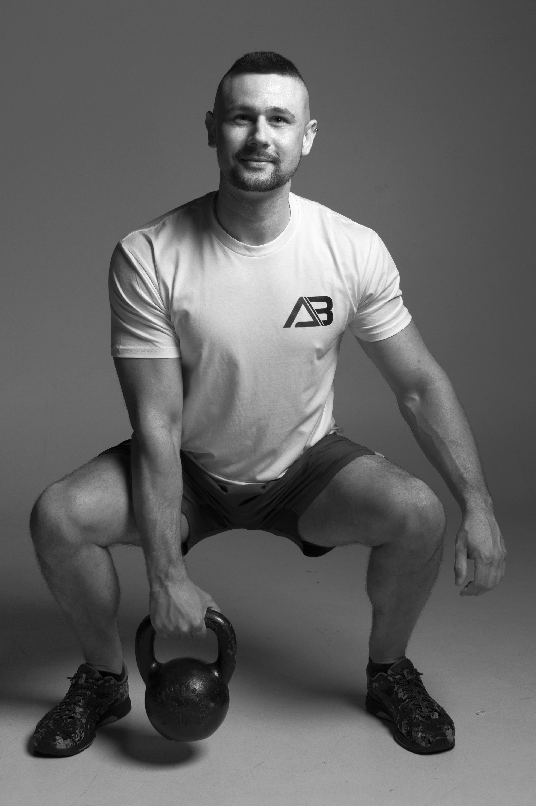
Heather
A short narrative series — the photographer becomes the subject. Hat, coat, camera, smoke. Cinematic black with controlled fill.
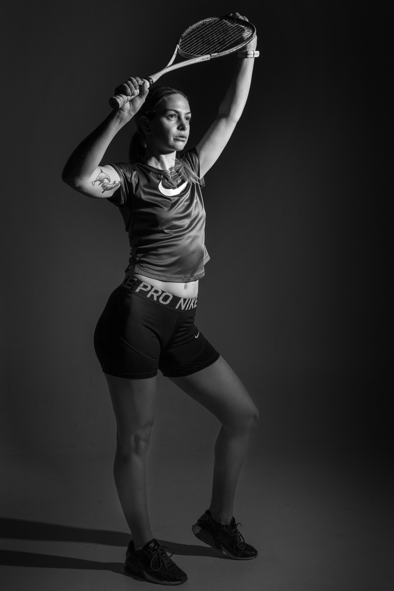
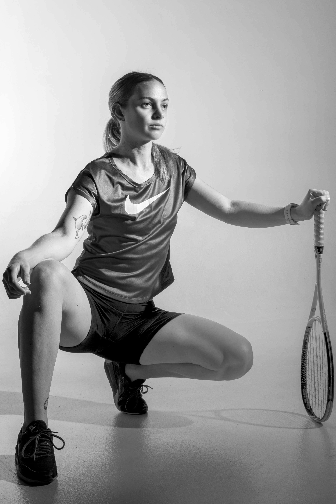
Pierre
Three-frame portrait sitting — angel wings, a wide-brim hat, and a full-length figure study. High-key on white seamless.
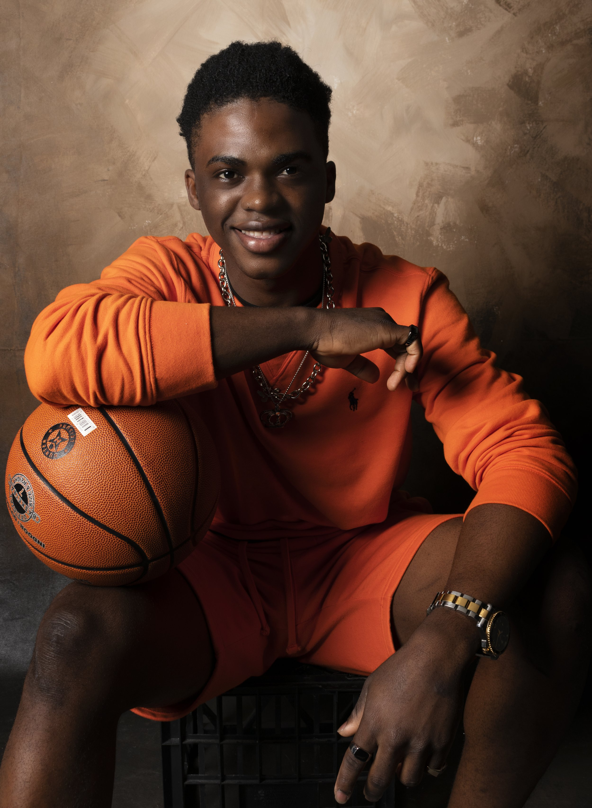
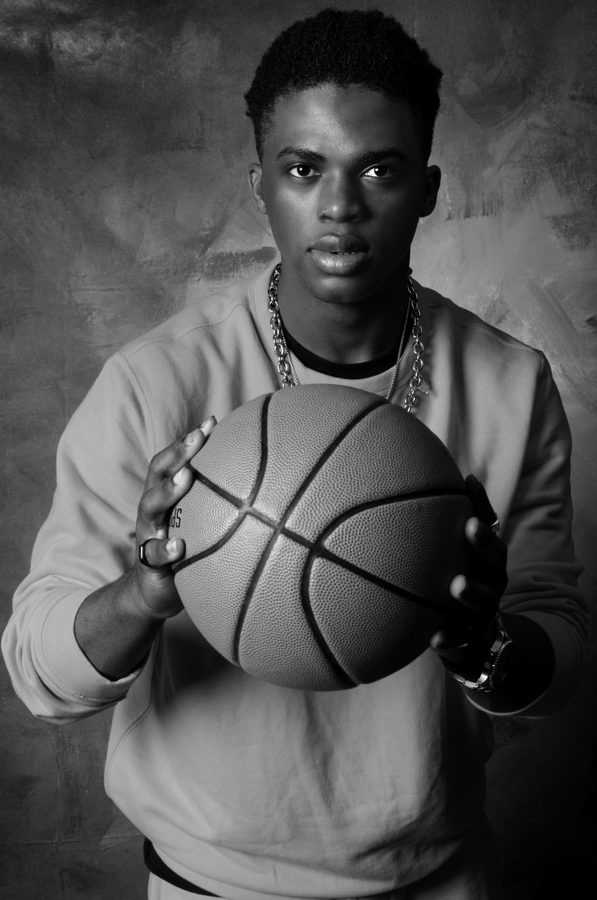
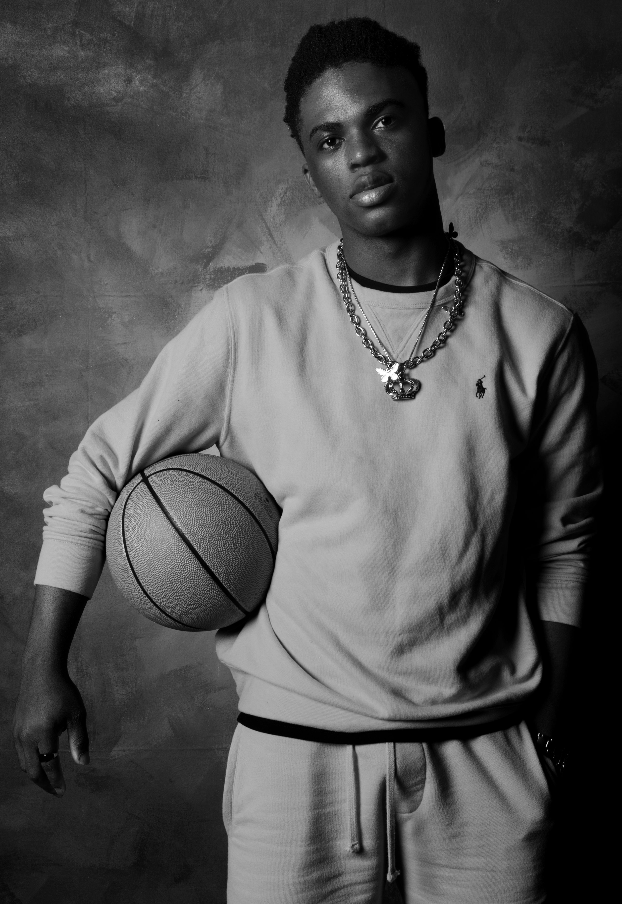
Sihle
Painterly backdrop with hard key light — basketball as a still-life prop, posture as a frame. One color frame, two in monochrome.
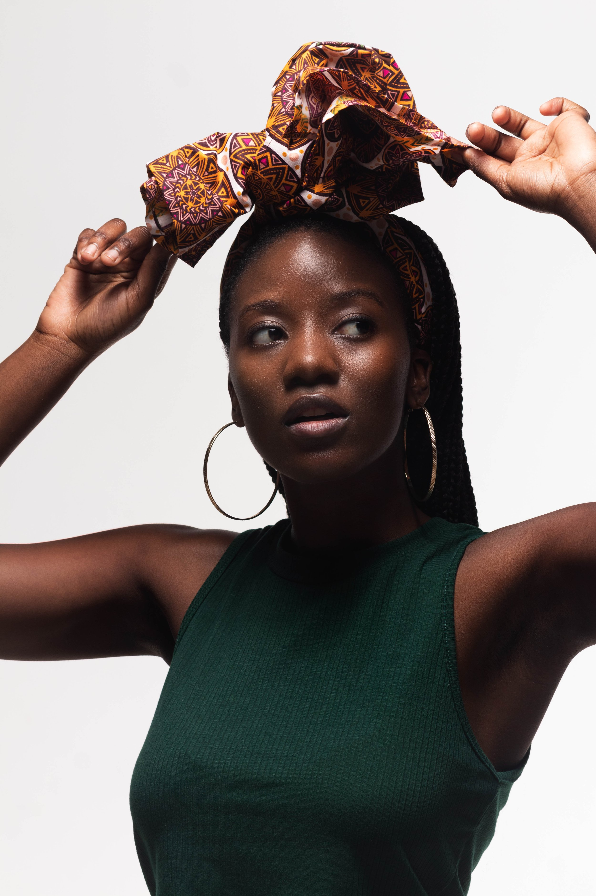
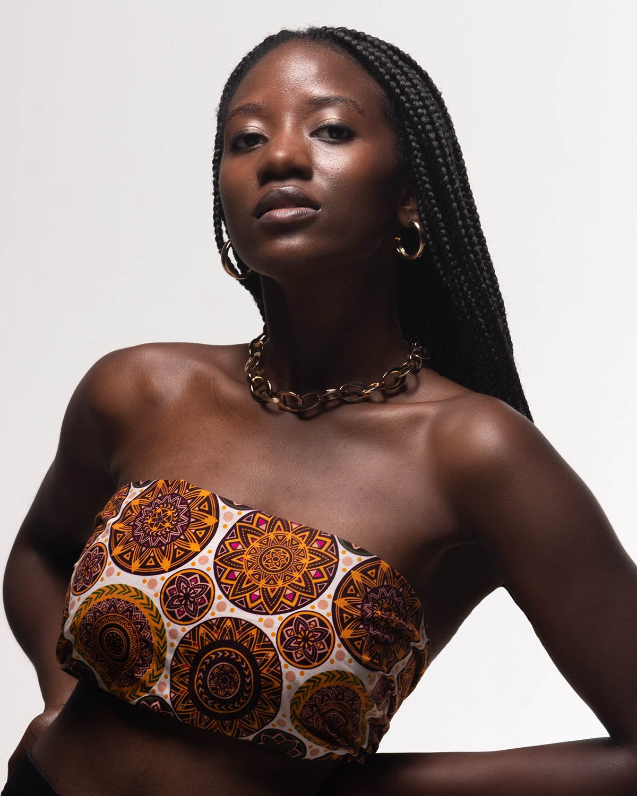
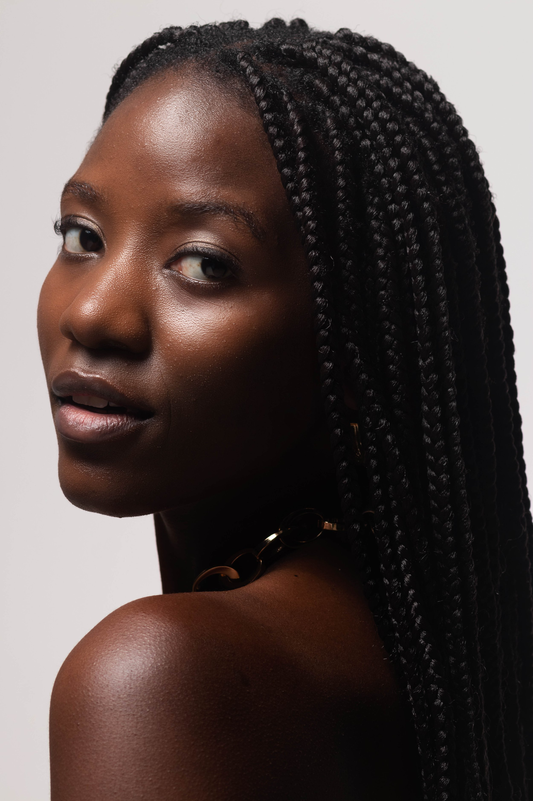